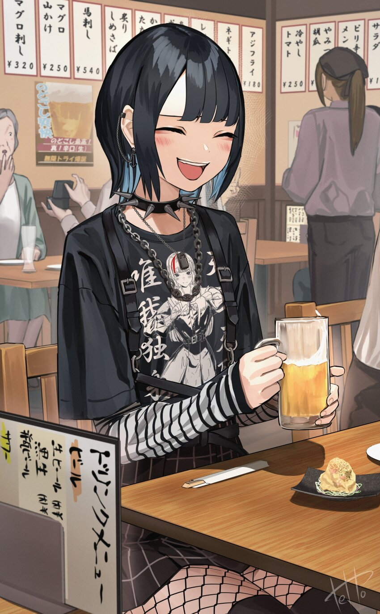

Gallery
1 / 6
2 / 6
3 / 6

4 / 6
5 / 6
6 / 6
Blog
Pengalaman Jirai Kei
Saya telah memakai Jirai Sejak tahun 2020 dan saya sangat menikmatinya! Saya tahu fesyen seharusnya hanya lelucon, dan meledak menjadi tren. Tapi itu nyata bagiku dan membuatku bahagia...
Baca selengkapnyaJoseph Stalin, Pahlawan atau Musuh?
Joseph Stalin adalah salah satu tokoh sejarah yang kita tidak yakin bagaimana cara mengkategorikannya. Tidak diragukan lagi, dia adalah salah satu pemimpin paling berpengaruh dan signifikan di abad ke-20. Tapi apakah mungkin untuk mengkategorikannya sebagai pahlawan atau penjahat?
Baca selengkapnyaKetika 8 Negara bekerja sama melawan China
Terjadi setelah kekeringan parah, banjir dan kelaparan, Pemberontakan Boxer, Yihetuan atau yang paling puitis, Gerakan Tinju yang Benar dan Harmonis, adalah pemberontakan di Tiongkok yang terjadi antara tahun 1899 dan 1900.
Baca selengkapnya